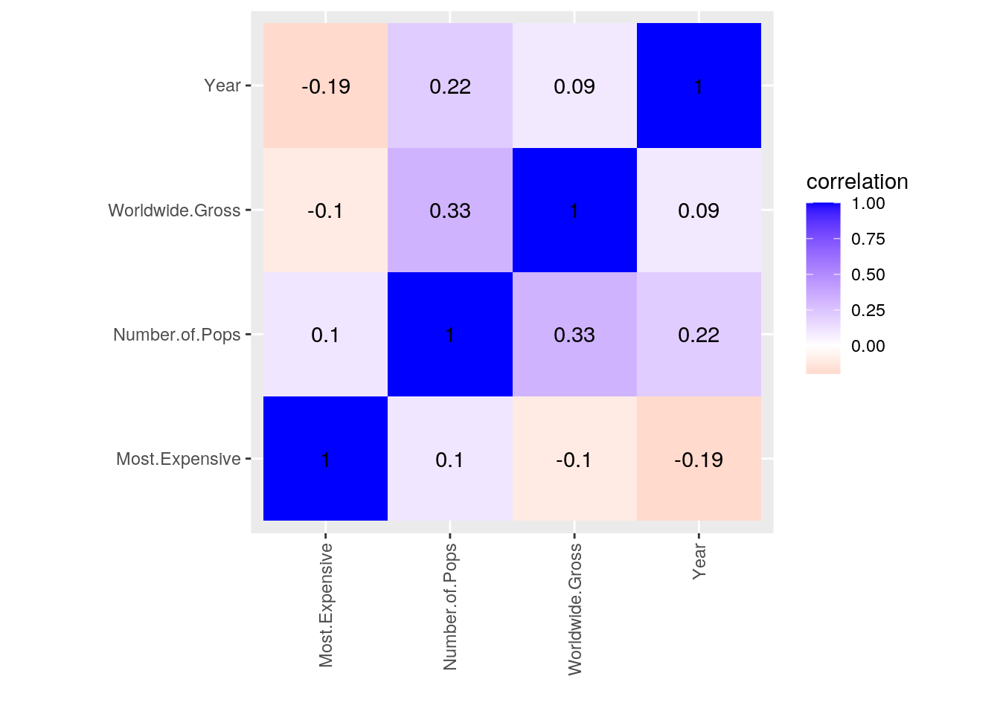
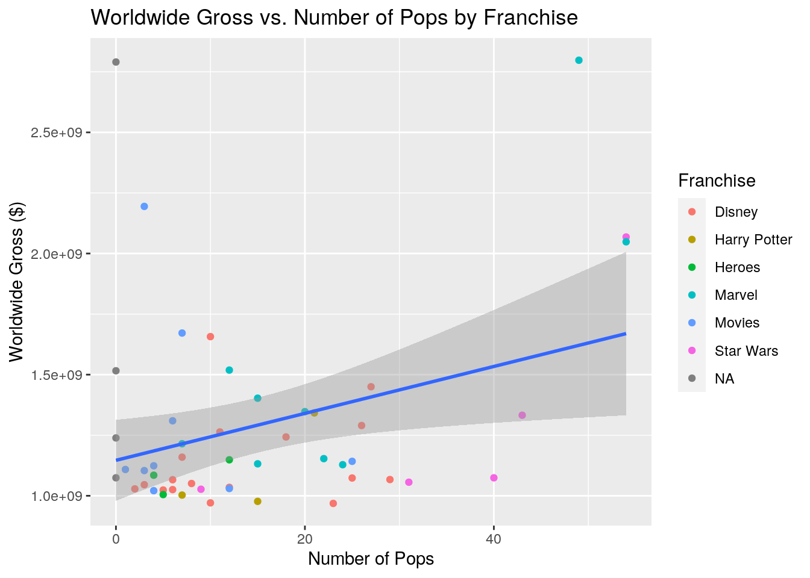
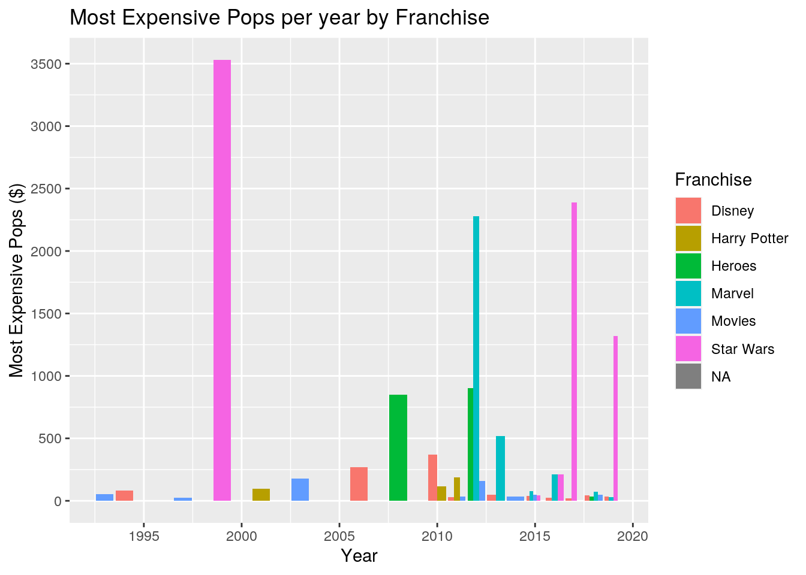
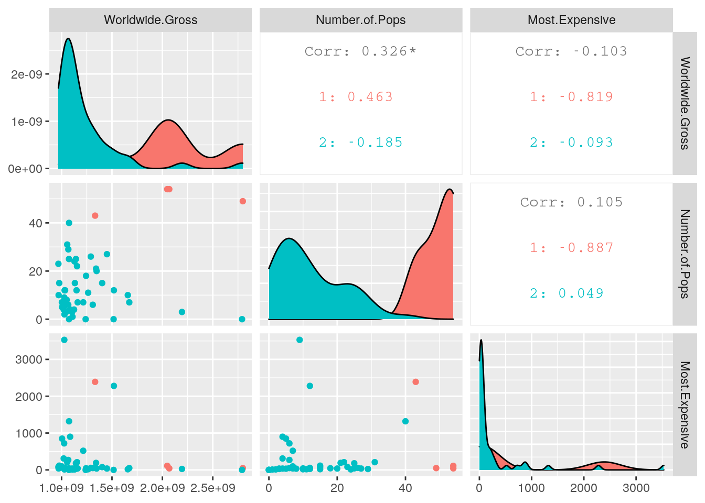
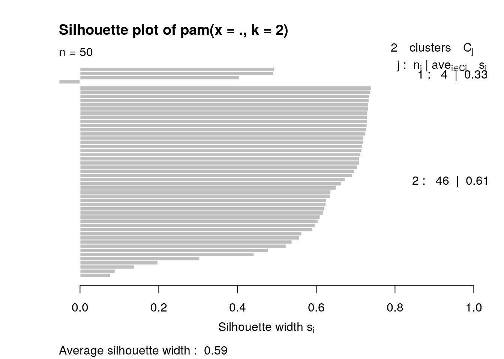
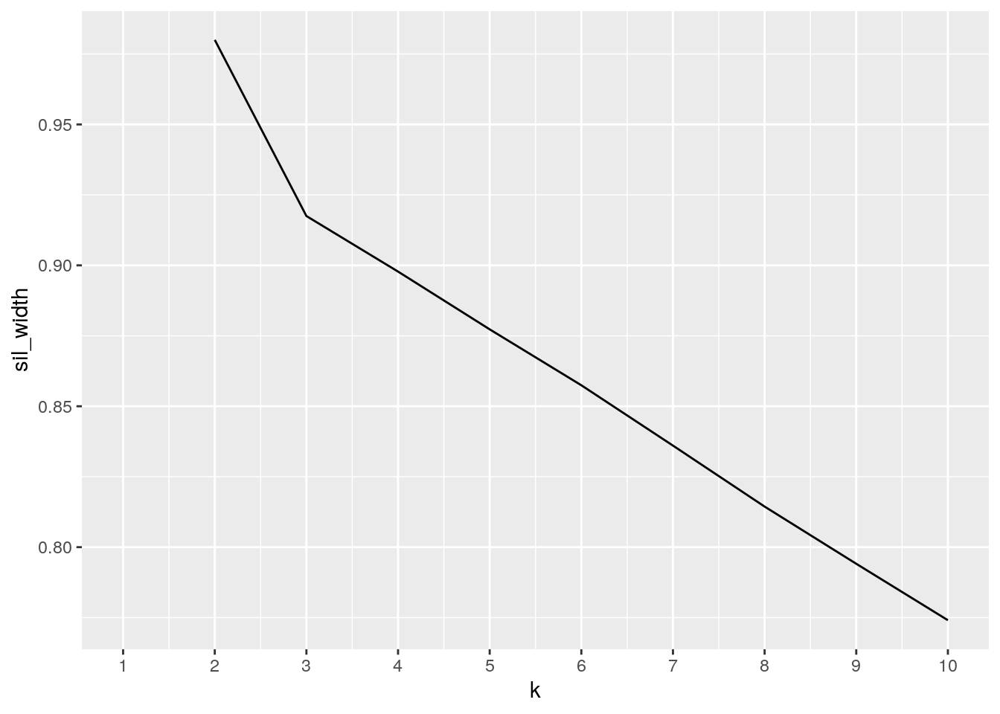

library(tidyr)
untidy_movies <- my_movies %>% pivot_wider(names_from = "Year", values_from = "Worldwide.Gross")
untidy_movies## # A tibble: 50 x 20
## Title `2019` `2009` `1997` `2015` `2018` `2012` `2011` `2017` `2013`
## <chr> <dbl> <dbl> <dbl> <dbl> <dbl> <dbl> <dbl> <dbl> <dbl>
## 1 Aven… 2.80e9 NA NA NA NA NA NA NA NA
## 2 Avat… NA 2.79e9 NA NA NA NA NA NA NA
## 3 Tita… NA NA 2.19e9 NA NA NA NA NA NA
## 4 Star… NA NA NA 2.07e9 NA NA NA NA NA
## 5 Aven… NA NA NA NA 2.05e9 NA NA NA NA
## 6 Jura… NA NA NA 1.67e9 NA NA NA NA NA
## 7 The … 1.66e9 NA NA NA NA NA NA NA NA
## 8 The … NA NA NA NA NA 1.52e9 NA NA NA
## 9 Furi… NA NA NA 1.52e9 NA NA NA NA NA
## 10 Froz… 1.45e9 NA NA NA NA NA NA NA NA
## # … with 40 more rows, and 10 more variables: `2016` <dbl>, `2003` <dbl>,
## # `2014` <dbl>, `2010` <dbl>, `2006` <dbl>, `1993` <dbl>, `1999` <dbl>,
## # `2008` <dbl>, `2001` <dbl>, `1994` <dbl>untidy_movies %>% pivot_longer(!Title, names_to = "Year", values_to = "Worldwide.Gross")## # A tibble: 950 x 3
## Title Year Worldwide.Gross
## <chr> <chr> <dbl>
## 1 Avengers: Endgame 2019 2797800564
## 2 Avengers: Endgame 2009 NA
## 3 Avengers: Endgame 1997 NA
## 4 Avengers: Endgame 2015 NA
## 5 Avengers: Endgame 2018 NA
## 6 Avengers: Endgame 2012 NA
## 7 Avengers: Endgame 2011 NA
## 8 Avengers: Endgame 2017 NA
## 9 Avengers: Endgame 2013 NA
## 10 Avengers: Endgame 2016 NA
## # … with 940 more rowsuntidy_pops <- my_pops %>% pivot_wider(names_from = "Franchise", values_from = "Number.of.Pops")
untidy_pops## # A tibble: 50 x 9
## Title Most.Expensive Marvel `NA` Movies `Star Wars` Disney `Harry Potter`
## <chr> <dbl> <dbl> <dbl> <dbl> <dbl> <dbl> <dbl>
## 1 Aven… 49 49 NA NA NA NA NA
## 2 Avat… 0 NA 0 NA NA NA NA
## 3 Tita… 26 NA NA 3 NA NA NA
## 4 Star… 42 NA NA NA 54 NA NA
## 5 Aven… 110 54 NA NA NA NA NA
## 6 Jura… 50 NA NA 7 NA NA NA
## 7 The … 17 NA NA NA NA 10 NA
## 8 The … 2280 12 NA NA NA NA NA
## 9 Furi… 0 NA 0 NA NA NA NA
## 10 Froz… 37 NA NA NA NA 27 NA
## # … with 40 more rows, and 1 more variable: Heroes <dbl>untidy_pops %>% pivot_longer(!Title, names_to = "Franchise", values_to = "Number.of.Pops")## # A tibble: 400 x 3
## Title Franchise Number.of.Pops
## <chr> <chr> <dbl>
## 1 Avengers: Endgame Most.Expensive 49
## 2 Avengers: Endgame Marvel 49
## 3 Avengers: Endgame NA NA
## 4 Avengers: Endgame Movies NA
## 5 Avengers: Endgame Star Wars NA
## 6 Avengers: Endgame Disney NA
## 7 Avengers: Endgame Harry Potter NA
## 8 Avengers: Endgame Heroes NA
## 9 Avatar Most.Expensive 0
## 10 Avatar Marvel NA
## # … with 390 more rowsBoth the datasets, my_movies and my_pops, are already tidy (every observation has its own row and every variable its own column), so I made them untidy with pivot_wider and made them tidy with pivot_longer. The names_from and values_from in the pivot_wider were assigned variables from the original dataset in order to create more columns that used to be observations from the first variable. Having observations as columns included many unnecessary columns that now have rows from the second variable. In order to rectify this, pivot_longer was used to give the observations that were made into columns back into rows under a variable name while the rows that filled up those extraneous columns were put under its own column with its own variable. This made less columns but more rows, hence it became longer.
library(dplyr)##
## Attaching package: 'dplyr'## The following objects are masked from 'package:stats':
##
## filter, lag## The following objects are masked from 'package:base':
##
## intersect, setdiff, setequal, unionjoined_data <- my_movies %>% left_join(my_pops)## Joining, by = "Title"joined_data## # A tibble: 50 x 6
## Title Worldwide.Gross Year Number.of.Pops Franchise Most.Expensive
## <chr> <dbl> <dbl> <dbl> <chr> <dbl>
## 1 Avengers: Endg… 2797800564 2019 49 Marvel 49
## 2 Avatar 2790439000 2009 0 <NA> 0
## 3 Titanic 2194439542 1997 3 Movies 26
## 4 Star Wars: The… 2068223624 2015 54 Star Wars 42
## 5 Avengers: Infi… 2048359754 2018 54 Marvel 110
## 6 Jurassic World 1671713208 2015 7 Movies 50
## 7 The Lion King … 1656943394 2019 10 Disney 17
## 8 The Avengers 1518812988 2012 12 Marvel 2280
## 9 Furious 7 1516045911 2015 0 <NA> 0
## 10 Frozen II 1450026933 2019 27 Disney 37
## # … with 40 more rowsIn order to combine my two datasets, I used a left_join since conveniently the variable I wanted to join by was "Title" which is the left-most column on both datasets. By using the left_join, all rows from the first dataset were retained (my_movies) while rows with matches from the second dataset (my_pops) were added. Fortunately, all 50 observations were shared between the two datasets and thus none were dropped. Therefore, the number of observations remained the same while the number of variables went from 3 to 5 since two more new variables were added after the join ("Number of Pops" and "Franchise").
joined_data %>% filter(Franchise == "Marvel" & Number.of.Pops >= 20)## # A tibble: 5 x 6
## Title Worldwide.Gross Year Number.of.Pops Franchise Most.Expensive
## <chr> <dbl> <dbl> <dbl> <chr> <dbl>
## 1 Avengers: Endga… 2797800564 2019 49 Marvel 49
## 2 Avengers: Infin… 2048359754 2018 54 Marvel 110
## 3 Black Panther 1347280838 2018 20 Marvel 37
## 4 Captain America… 1153329473 2016 22 Marvel 210
## 5 Captain Marvel 1128274794 2019 24 Marvel 14joined_data %>% filter(Worldwide.Gross > 1000000 & between(Year, 2010, 2020)) %>%
arrange(desc(Year)) %>% select(-Number.of.Pops)## # A tibble: 41 x 5
## Title Worldwide.Gross Year Franchise Most.Expensive
## <chr> <dbl> <dbl> <chr> <dbl>
## 1 Avengers: Endgame 2797800564 2019 Marvel 49
## 2 The Lion King (Remake) 1656943394 2019 Disney 17
## 3 Frozen II 1450026933 2019 Disney 37
## 4 Spider-Man: Far From Home 1131927996 2019 Marvel 19
## 5 Captain Marvel 1128274794 2019 Marvel 14
## 6 Joker 1074251311 2019 <NA> 0
## 7 Star Wars: The Rise of Skywal… 1074144248 2019 Star Wars 1320
## 8 Toy Story 4 1073394593 2019 Disney 42
## 9 Aladdin 1050693953 2019 Disney 33
## 10 Avengers: Infinity War 2048359754 2018 Marvel 110
## # … with 31 more rowsjoined_data %>% mutate(percent.change = (Worldwide.Gross - lead(Worldwide.Gross))/ lead(Worldwide.Gross)) %>% select(-Number.of.Pops, -Franchise)## # A tibble: 50 x 5
## Title Worldwide.Gross Year Most.Expensive percent.change
## <chr> <dbl> <dbl> <dbl> <dbl>
## 1 Avengers: Endgame 2797800564 2019 49 0.00264
## 2 Avatar 2790439000 2009 0 0.272
## 3 Titanic 2194439542 1997 26 0.0610
## 4 Star Wars: The Force Awa… 2068223624 2015 42 0.00970
## 5 Avengers: Infinity War 2048359754 2018 110 0.225
## 6 Jurassic World 1671713208 2015 50 0.00891
## 7 The Lion King (Remake) 1656943394 2019 17 0.0909
## 8 The Avengers 1518812988 2012 2280 0.00183
## 9 Furious 7 1516045911 2015 0 0.0455
## 10 Frozen II 1450026933 2019 37 0.0337
## # … with 40 more rowsjoined_data %>% summarize(mean_gross = mean(Worldwide.Gross), sd_gross = sd(Worldwide.Gross), var_gross = var(Worldwide.Gross), IQR_gross = IQR(Worldwide.Gross), mad_gross = mad(Worldwide.Gross), min_gross = min(Worldwide.Gross), max_gross = max(Worldwide.Gross), median_gross = median(Worldwide.Gross), n_rows = n(), n_franchises = n_distinct(Franchise))## # A tibble: 1 x 10
## mean_gross sd_gross var_gross IQR_gross mad_gross min_gross max_gross
## <dbl> <dbl> <dbl> <dbl> <dbl> <dbl> <dbl>
## 1 1.29e9 4.19e8 1.75e17 292695205 1.59e8 968483777 2.80e9
## # … with 3 more variables: median_gross <dbl>, n_rows <int>, n_franchises <int>joined_data %>% summarize(mean_pops = mean(Number.of.Pops), sd_pops = sd(Number.of.Pops), var_pops = var(Number.of.Pops), IQR_pops = IQR(Number.of.Pops), mad_pops = mad(Number.of.Pops), min_pops = min(Number.of.Pops), max_pops = max(Number.of.Pops), median_pops = median(Number.of.Pops))## # A tibble: 1 x 8
## mean_pops sd_pops var_pops IQR_pops mad_pops min_pops max_pops median_pops
## <dbl> <dbl> <dbl> <dbl> <dbl> <dbl> <dbl> <dbl>
## 1 15.0 14.1 199. 17.8 11.1 0 54 10.5joined_data %>% summarize(mean_expensive = mean(Most.Expensive, na.rm=T), sd_expensive = sd(Most.Expensive, na.rm=T), var_expensive = var(Most.Expensive, na.rm=T), IQR_expensive = IQR(Most.Expensive, na.rm=T), mad_expensive = mad(Most.Expensive, na.rm=T), min_expensive = min(Most.Expensive, na.rm=T), max_expensive = max(Most.Expensive, na.rm=T), median_expensive = median(Most.Expensive, na.rm=T))## # A tibble: 1 x 8
## mean_expensive sd_expensive var_expensive IQR_expensive mad_expensive
## <dbl> <dbl> <dbl> <dbl> <dbl>
## 1 305. 688. 473154. 161. 43.7
## # … with 3 more variables: min_expensive <dbl>, max_expensive <dbl>,
## # median_expensive <dbl>joined_data %>% group_by(Franchise) %>% summarize(mean_gross = mean(Worldwide.Gross), sd_gross = sd(Worldwide.Gross), max_gross = max(Worldwide.Gross), min_gross = min(Worldwide.Gross), median_gross = median(Worldwide.Gross))## `summarise()` ungrouping output (override with `.groups` argument)## # A tibble: 7 x 6
## Franchise mean_gross sd_gross max_gross min_gross median_gross
## <chr> <dbl> <dbl> <dbl> <dbl> <dbl>
## 1 Disney 1142206721. 185778523. 1656943394 968483777 1066179725
## 2 Harry Potter 1107293978. 203697808. 1342025430 976941486 1002915019
## 3 Heroes 1079453006 71933000. 1148485886 1004934033 1084939099
## 4 Marvel 1527044836. 557527509. 2797800564 1128274794 1347280838
## 5 Movies 1300589916. 390509641. 2194439542 1021103568 1123794079
## 6 Star Wars 1311601942. 440334202. 2068223624 1027044677 1074144248
## 7 <NA> 1654875247. 778684941. 2790439000 1074251311 1377405338joined_data %>% group_by(Franchise, Year) %>% summarize(mean_pops = mean(Number.of.Pops), max_pops = max(Number.of.Pops))## `summarise()` regrouping output by 'Franchise' (override with `.groups` argument)## # A tibble: 39 x 4
## # Groups: Franchise [7]
## Franchise Year mean_pops max_pops
## <chr> <dbl> <dbl> <dbl>
## 1 Disney 1994 23 23
## 2 Disney 2006 6 6
## 3 Disney 2010 17.5 29
## 4 Disney 2011 3 3
## 5 Disney 2013 18 26
## 6 Disney 2015 7 7
## 7 Disney 2016 3.5 5
## 8 Disney 2017 11.5 12
## 9 Disney 2018 18 18
## 10 Disney 2019 17.5 27
## # … with 29 more rowslibrary(tibble)
untidy_cor <- joined_data %>% select_if(is.numeric) %>% cor(use="pair")
cor_data <- untidy_cor %>% as.data.frame %>% rownames_to_column("var1") %>%
pivot_longer(-1, names_to="var2", values_to = "correlation")
cor_data## # A tibble: 16 x 3
## var1 var2 correlation
## <chr> <chr> <dbl>
## 1 Worldwide.Gross Worldwide.Gross 1
## 2 Worldwide.Gross Year 0.0946
## 3 Worldwide.Gross Number.of.Pops 0.326
## 4 Worldwide.Gross Most.Expensive -0.103
## 5 Year Worldwide.Gross 0.0946
## 6 Year Year 1
## 7 Year Number.of.Pops 0.216
## 8 Year Most.Expensive -0.195
## 9 Number.of.Pops Worldwide.Gross 0.326
## 10 Number.of.Pops Year 0.216
## 11 Number.of.Pops Number.of.Pops 1
## 12 Number.of.Pops Most.Expensive 0.105
## 13 Most.Expensive Worldwide.Gross -0.103
## 14 Most.Expensive Year -0.195
## 15 Most.Expensive Number.of.Pops 0.105
## 16 Most.Expensive Most.Expensive 1First I created two filters: one where I wanted to only look at Marvel movies that had more than 20 Funko Pop figures created for that specific movie and one where I wanted to only look at recent movies from the past decade where the movie grossed more than $1,000,000 worldwide. The second filtered line also includes an arrange function which organized the observations by year in a descending order (most recent movies first). In addition, we only want data pertaining to the actual movies themselves, thus I selected out Number.of.Pops so that only the four columns that describe the movies remained (note: Franchise specifically pertains to the Funko Pop franchise line the movie belongs to, but is useful to describe the movie franchise as well). Next, I wanted to see the percent change ascending by comparing how much more the higher-grossing movie earned compared to the movie right underneath it in the rank. This was achieved with mutate in order to add another column titled "percent.change" and I also removed the two columns pertaining to Pops in order to focus solely on the movie gross incomes.
The next three lines of code focuses on summary statistics using the function summarize() and the unique functions inside summarize (mean, sd, var, IQR, mad, min, max, median, n(), and n_distinct). Var measures how far the values are from the mean, IQR finds the interquartile range, mad measures the median absolute deviation from the median, n() measure the total number of rows, and n_distinct() measures the total number of distinct rows. These were done on the three numerical variables Worldwide.Gross, Number.of.Pops, and Most.Expensive. The Year variable was not included since taking the means, sd, and so on did not seem to make sense with the years the movies came out. For the Most.Expensive variable, na.rm=T was implemented since there were NA values within the variable while the other two numerical variables did not. The average number of Pops produced for a movie was 15 while the average of all the most expensive Pops for each movie was $331. After this, I used group_by in order to subset the Franchise variable and group them back together to return the mean and standard deviations for the Worldwide Gross. Following that, two categorical variables were simultaneously grouped (Franchise and Year) in order for us to group the mean and max values of Number of Pops based on these two categorical variables. Lastly, a correlation matrix was created which compared all numerical variables to all the other numeric variables. There seemed to be a high correlation between the worldwide gross and the number of pops (about 32%) and a negative correlation between worldwide gross and most expensive pop in the line (about -10%).
library(ggplot2)
cor_data %>% ggplot(aes(var1, var2, fill=correlation)) + geom_tile() + geom_text(aes(label=round(correlation,2))) + xlab("") + ylab("") + coord_fixed() + scale_fill_gradient2(low="red", mid="white", high="blue") + theme(axis.text.x = element_text(angle = 90, vjust=0.5, hjust=1))
ggplot(joined_data, aes(Number.of.Pops, Worldwide.Gross)) + geom_point(aes(color=Franchise)) + geom_smooth(method="lm") + ggtitle("Worldwide Gross vs. Number of Pops by Franchise") + xlab("Number of Pops") + ylab("Worldwide Gross ($)")## `geom_smooth()` using formula 'y ~ x'
ggplot(joined_data, aes(x=Year, y=Most.Expensive, fill=Franchise)) + geom_bar(stat="summary", position="dodge") + scale_x_continuous(breaks = seq(1990,2020,5)) + scale_y_continuous(breaks=seq(0, 5000, 500)) + ggtitle("Most Expensive Pops per year by Franchise") + ylab("Most Expensive Pops ($)")## No summary function supplied, defaulting to `mean_se()` Using the correlation data from the previous section, I generated a correlation heat map that shows the values of correlation for each of the numeric variables in the dataset. The diagonal going from the bottome left to the top right shows the correlation of the variables to themselves, so it makes sense that they would return a correlation of 1. From this map, we can see that there are slightly positive correlations between worldwide gross and number of pops, year and number of pops, and number of pops and most expensive. These relationships were expected as a movie that earns a lot more money (meaning that it is very popular) will have a lot more Funko Pop figures made for it. The Funko company was founded fairly recently (1998) and it did not start making Pops until 2010, so the year the movie came out correlates with the number of pops made for the movie. The reason certain movies like the original Lion King (which was released in 1994) has Pops is because the company decided to make iconic Disney Pops from the past. There is a slightly positive relationship between the number of Pops and the most expensive Pop's price from each movie. The price of a Pop figure depends on various factors such as how long ago it was made, the rarity of it, etc. Therefore it is hard to predict whether a certain movie would have a very high priced Pop figure. Our heat map tells us that a movie that has a higher number of Pop figures made for it has a slightly positive relationship with having a very expensive Pop. There is a negative relationship between the year the movie came out and the movie's most expensive Pop as well as the worldwide gross and the most expensive Pop. As mentioned before, it is hard to predict how high in price a Pop figure will go and thus it is not surprising that there are negative correlations for these variables.
The second plot is a scatterplot that uses the ggplot function. The variable used on the x-axis is Number of Pops while that of the y-axis is Worldwide Gross. The colors of the dots represent the franchise that the movies belong to. From this data, we can see that there is an overall positive relationship between these two variables with slight variance. This makes sense since, as mentioned before, the more a movie earns worldwide the higher the likelihood that the Funko company will produce more Pop figures for that movie. We can also see that the Marvel, Star Wars, and Movie categories have the highest worldwide gross and highest number of Pops produced. There is an observation that had a high worldwide gross but no Pops created for the movie. This was for the movie "Avatar" and this is likely because the Funko company never received property rights to produce toys from this movie from the movie studio.
The third plot is a bar graph that uses stat="summary" to compare the year the movie came out with the most expensive pop value from that movie. Although there is no discernible relationship between these two variables, we can see how varied the most expensive Pops can be from when the movie was released. The Star Wars bar in 1999 had the most expensive Pop value (which is the holographic Darth Maul). There are a lot of factors that shift the value of a Pop figure from year to year. This includes quantity of figures made, exclusivity of the figure, and how old the figure is. If we take the holographic Darth Maul figure for example, it was released in 2012 as an exclusive for San Diego Comic Con with only 480 figures ever produced. In addition, we can see that the most expensive Pops are usually from the Star Wars franchise. Perhaps this is due to the immense popularity of these movies and the frequent production of only a few number of certain figures in this franchise. While Marvel movies are also immensely popular in recent years, there have not been as many over-the-top expensive Pops for this line.
library(cluster)
library(GGally)## Registered S3 method overwritten by 'GGally':
## method from
## +.gg ggplot2library(plotly)##
## Attaching package: 'plotly'## The following object is masked from 'package:ggplot2':
##
## last_plot## The following object is masked from 'package:stats':
##
## filter## The following object is masked from 'package:graphics':
##
## layoutclustdata <- joined_data %>% select(Worldwide.Gross, Number.of.Pops, Most.Expensive)
pam1 <- clustdata %>% scale %>% pam(2)
pam1## Medoids:
## ID Worldwide.Gross Number.of.Pops Most.Expensive
## [1,] 5 1.8059929 2.7642232 -0.2837778
## [2,] 23 -0.3429009 -0.2156889 -0.3971726
## Clustering vector:
## [1] 1 2 2 1 1 2 2 2 2 2 2 2 2 1 2 2 2 2 2 2 2 2 2 2 2 2 2 2 2 2 2 2 2 2 2 2 2 2
## [39] 2 2 2 2 2 2 2 2 2 2 2 2
## Objective function:
## build swap
## 1.098022 1.098022
##
## Available components:
## [1] "medoids" "id.med" "clustering" "objective" "isolation"
## [6] "clusinfo" "silinfo" "diss" "call" "data"pamclust <- clustdata %>% mutate(cluster=as.factor(pam1$clustering))
ggpairs(pamclust, columns=1:3, aes(color=cluster))
plot(pam1,which=2) 
sil_width<-vector()
for(i in 2:10){
pam_fit <- pam(clustdata, diss = TRUE, k = i)
sil_width[i] <- pam_fit$silinfo$avg.width
}## Warning in as.dist.default(x): non-square matrix
## Warning in as.dist.default(x): non-square matrix
## Warning in as.dist.default(x): non-square matrix
## Warning in as.dist.default(x): non-square matrix
## Warning in as.dist.default(x): non-square matrix
## Warning in as.dist.default(x): non-square matrix
## Warning in as.dist.default(x): non-square matrix
## Warning in as.dist.default(x): non-square matrix
## Warning in as.dist.default(x): non-square matrixggplot()+geom_line(aes(x=1:10,y=sil_width))+scale_x_continuous(name="k",breaks=1:10)## Warning: Removed 1 row(s) containing missing values (geom_path).
pamclust%>%plot_ly(x= ~Number.of.Pops, y = ~Worldwide.Gross, z = ~Most.Expensive, color= ~cluster,
type = "scatter3d", mode = "markers") %>%
layout(autosize = F, width = 900, height = 400)## Warning: Specifying width/height in layout() is now deprecated.
## Please specify in ggplotly() or plot_ly()## Warning: `arrange_()` is deprecated as of dplyr 0.7.0.
## Please use `arrange()` instead.
## See vignette('programming') for more help
## This warning is displayed once every 8 hours.
## Call `lifecycle::last_warnings()` to see where this warning was generated.## Warning in RColorBrewer::brewer.pal(N, "Set2"): minimal value for n is 3, returning requested palette with 3 different levels
## Warning in RColorBrewer::brewer.pal(N, "Set2"): minimal value for n is 3, returning requested palette with 3 different levelsFor this section, I first had to take my joined dataset and select out only the numerical variables and create a new dataset with these columns only. Next, I used the PAM function with this new dataset which I scaled in order to process my numeric variables. The PAM function was what I used to run a cluster analysis for my dataset. The number of clusters I used is 2 because initially I did not know how many clusters would give me the best fit for my dataset but using the silhouette code later on, I found that using 2 clusters was the best option. Before moving on, I created another dataset that took clustdata, which only had my numeric variables, and added another column with mutate that contained the cluster assignments for each observation. This will be useful to color the points when we create the ggplot. I then decided to visualize all pairwise combinations with ggpairs. There are only three numerical variables so only three columns are seen. We can see the correlations and the clusters using this visual. The colors in this visual are assigned to the cluster groupings for the data. I then interpreted my average silhouette width by plotting it and I found that it was 0.59. This value means that a reasonable structure has been found. This test was used to evaluate the goodness-of-fit of our dataset. Following that, I had put in the code to determine how many clusters would best fit my dataset with the silhouette method. This tells me that 2 clusters is the best since it had the highest silhouette width. This code starts off with an empty vector which I then followed with a "for" function that takes the information from the silhouette widths. The ggplot code is then used to plot and the x-axis was scaled from 1 to 10.
Finally, I took the three numerical variables and visualized the clusters with the plotly tool. This gave a 3D rendition of the three variables on the x, y, and z planes. The three numerical variables are Worldwide.Gross, Number.of.Pops, and Most.Expensive. There are only 2 clusters in the visual since that was what the silhouette test gave as the most fit number of clusters. The cluster variable was assigned the color of the dots. Interpreting the clusters, we can see that the two clusters are divided into those at the lower end of all variables and those at the higher end. In other words, the first cluster took the movies that grossed the least worldwide, had the fewest number of Pops made for it, and had the smallest value for its most expensive Pop. The second cluster is a little harder to explain. Most of the points seem to indicate that these movies grossed the most and had the most number of Pops but did not have very expensive Pops. The most likely reason is that we have seen how there is a negative correlation between worldwide gross and most expensive Pop while there is only a slightly positive correlation between number of pops and most expensive. So there is much ambiguity when it comes to comparing our values while including the most expensive Pop's value since this variable does not seem to correlate with any other variable. Nevertheless, we see that the two clusters divided our dataset into the lower half of grossing movies/number of Pops and the higher half of grossing movies/number of Pops.